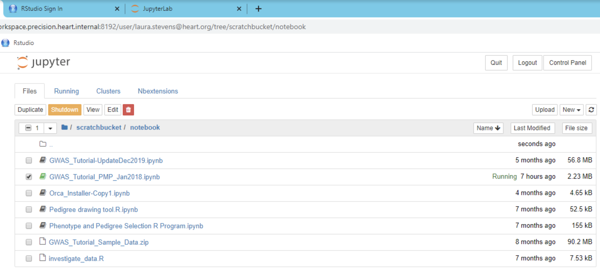
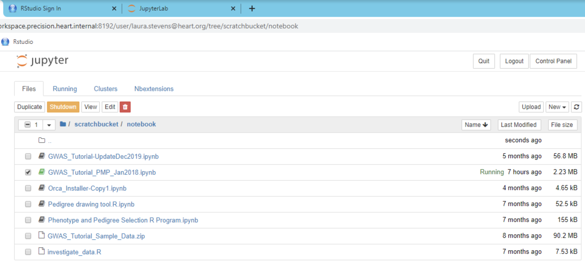

The Precision Medicine Platform Workspace consists of two parts, the workspace portal (image on the left), and the cloud-based virtual environment that is used for computing (image on the right).
The portal is a webpage that acts as in interface between the user and the workspace virtual environment, and allows users to control workspace settings. The workspace environment is a cloud-based compute environment for analytics powered by Amazon Web Services and Supported by Hitachi Vantara.
 
